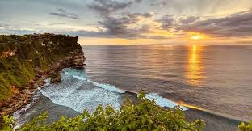

여행지 소개
인도네시아

발리의 관광명소 소개
발리 최고의 명소를 관광하며 여행을 시작하세요.
kuta beach, 발리스윙, 몽키포레스트, karsa spa, 띠르따 엠풀 사원, 네카 박물관, 울뚜와뚜 사원, Tanah Lot를 둘러보고 인근 지역의 숨은 명소를 구경하면서 남은 시간을 보내세요! 발리는 세계적으로 유명한 도시로, 다양한 문화, 역사, 예술적인 경험을 제공하는 여러 관광 명소가 있습니다. 여기에는 몇 가지 인기 있는 명소가 포함되어 있습니다!
- Kuta Beach (쿠타 비치): 발리에서 가장 유명한 해변 중 하나로, 파도가 매우 적합한 곳입니다. 특히 서핑을 즐기는 이들에게 인기가 많으며, 백사장과 일몰이 아름다워 관광객들에게 인기가 있습니다.

- Bali Swing (발리스윙): 발리스윙은 운행 중인 여러 스윙 중 하나로, 정글이나 폭포 앞에서 스윙을 즐길 수 있는 장소입니다. 사진을 찍기에도 인기가 있고, 자연 경치를 즐기면서 스릴을 느낄 수 있는 곳입니다.
- Monkey Forest (몽키포레스트): 우뚝 솟은 나무와 울창한 정글 속에 위치한 몽키포레스트는 수백 마리의 원숭이가 살고 있는 곳입니다. 관광객은 이 자유로운 원숭이들과 가까이에서 소통하며 시간을 보낼 수 있습니다.
- Karsa Spa (카르사 스파):발리의 다양한 스파 중 하나로, Karsa Spa는 아름다운 라이스 테라스 전망을 즐기면서 전통 발리 마사지 및 스파 트리트먼트를 제공합니다.
- Neka Art Museum (네카 박물관): 발리의 예술과 문화에 대한 이해를 높이고자 하는 이들을 위한 박물관으로, 발리 예술가의 작품뿐만 아니라 동남아시아 예술 전반에 대한 소장품을 전시하고 있습니다.
- Uluwatu Temple (울뚜와뚜 사원): 바다 위의 절벽에 자리한 이 사원은 아름다운 해안 경치와 일몰을 감상할 수 있는 곳으로, 발리의 바위 사원 중 하나로 꼽힙니다. 공연과 함께 이 자리의 매력을 느낄 수 있습니다.

- Tanah Lot (타나로트): 타나로트는 바다 위에 우뚝 솟은 바위와 그 위에 위치한 사원으로 유명합니다. 특히 일몰 시간에는 아름다운 일몰과 함께 바위 위의 사원이 만들어내는 신비로운 풍경이 매우 인상적입니다. 바다와 하늘이 어우러진 이곳은 발리를 대표하는 관광지 중 하나로 꼽히고 있습니다.